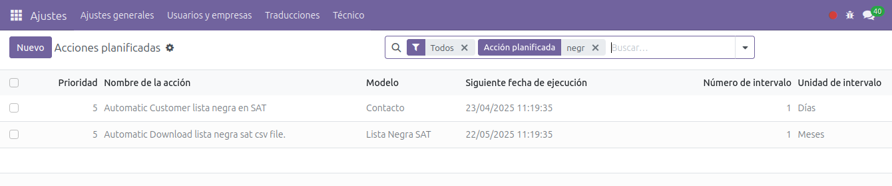
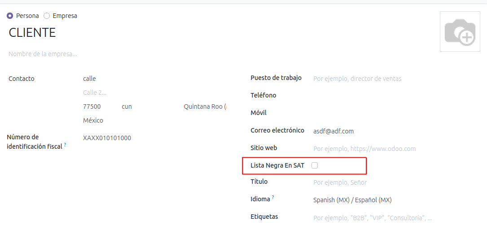
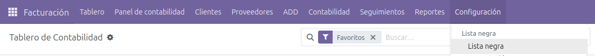
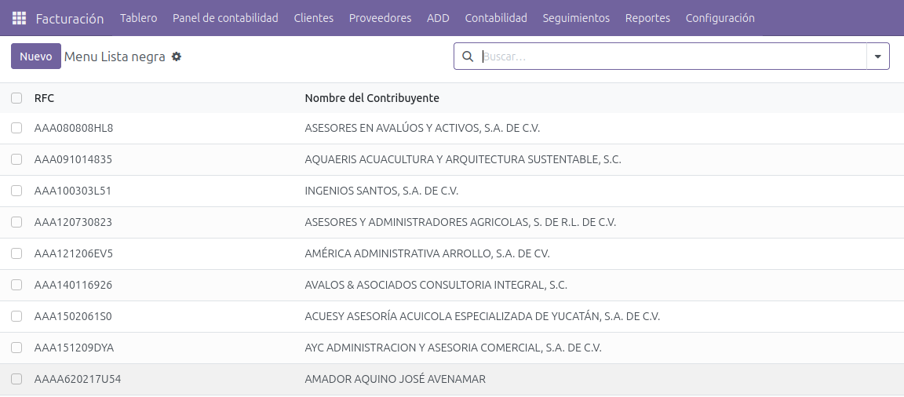
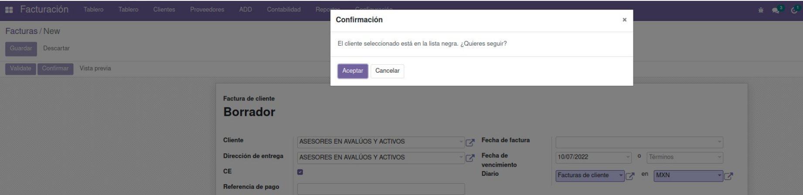

Lista Negra
El módulo agrega dos acciones planificadas: una para descargar mes la lista de RFC's en la lista negra y otra para que se revisen los contactos para validar si alguno de ellos está en la lista negra.

En los clientes se agrega un campo adicional para marcar aquellos que estén en la lista negra.

Se puede verificar la lista de RFC's que están en lista negra.


Al intentar confirmar una factura o pedido si el RFC del cliente aparece en la lista negra se va a lanzar un mensaje de alerta.
